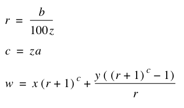
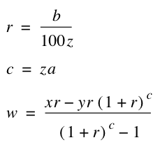
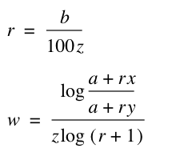

Future value of savings functions
The savings functions differ from the previous functions, that in addition to the interest, you also have periodic deposits or withdrawals from the account.
Those functions can be used in different ways, depending on the situations. We go through them all on this page.
The first function is for calculating the future value of savings.
FutureValueOfSavings(x; y; z; a; b )
Where
x = Present value
y = Periodical payment amount
z = No of annual payments(12)
a = No of years
b = annual interest rate
The following formulas are used:

Example:
Lets say, that we have 10.000 on a bank account now. Then we deposit 500 on this account every month. The interest rate on the account is 2%. What is the future value after 10 years.
FutureValueOfSavings(10000;500;12;10;2)=78571.83971
---------------------
The next function is the payment needed on a savings account to reach a spesific future value.
PaymentSavings(x; y; z; a; b )
Where
x = Savings target
y = Present value
z = No of annual payments(12)
a = No of years
b = annual interest rate
This function uses the following formula:

Example:
Lets say, that we have 10.000,- on a savings account. We want this to be 100.000,- in the next 10 years. The interest rate is 2%. How much do we need to deposit every month for this to happen.
PaymentSavings(100000;10000;12;10;2)=661.4542675
Another example: Lets say, that we have 1.000.000 on the savings account. We want withdraw a montly value from this account, but we want the money to last 10 years. How much is the maximum we can withraw every month to let this money last 10 years.
PaymentSavings(0;1000000;12;10;2)= - 9201.343712
After that, the bank account will be empty. The result is a negative value, and this is of cource because the money is withdrawn instead of deposited.
----------------
Next function in this series, is "Years to reach a savings target".
SavingsYearsToTarget(x; y; z; a; b )
Where
x = Savings target
y = Present value
z = No of annual payments(12)
a = Periodic payment sum
b = annual interest rate
The formulas used for this function is:

Example:
We have 10.000 on a bank account. We deposit 2.000 each month on this. The bank interest rate is 2%. How long time will it take to get 1.000.000 on that account.
SavingsYearsToTarget(1000000;10000;12;2000;2)=29.91674703
This was the last function in this serie. If you like other function to be implemeted, send me an e-mail with the data, and I will have a look at it.